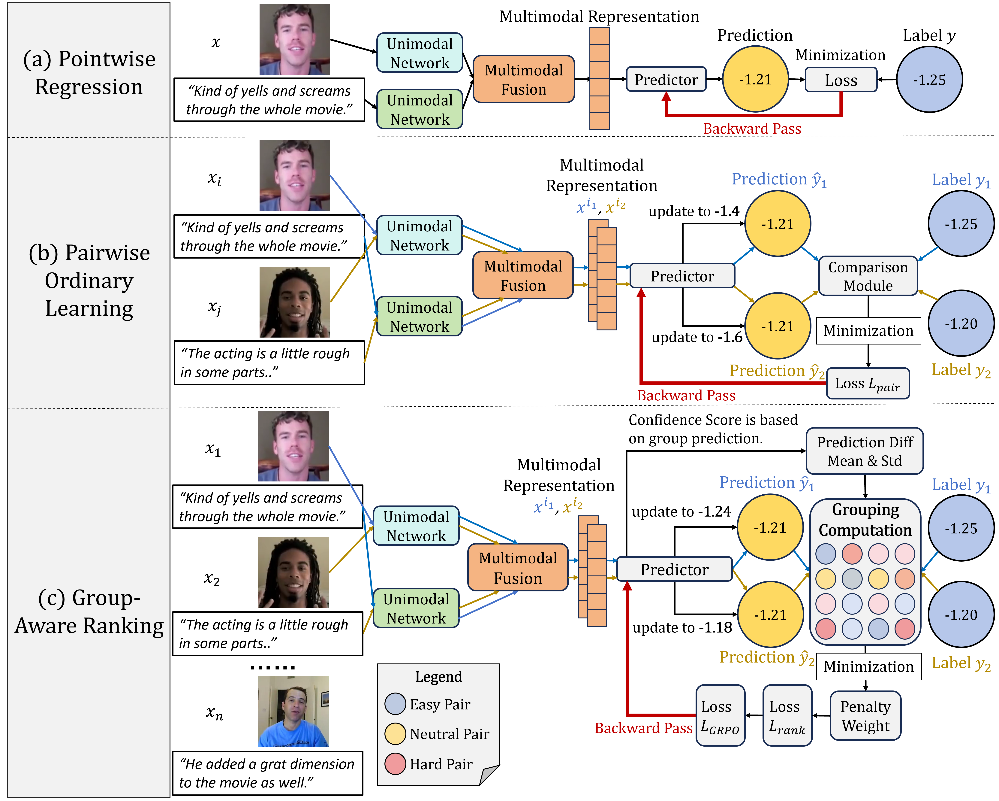
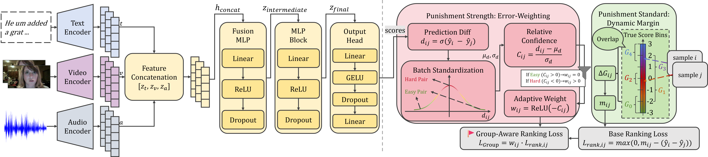
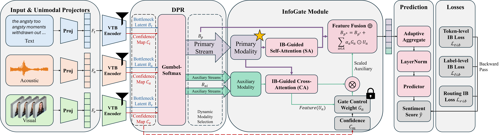

Publications
You can also find my articles on my Google Scholar profile.
Conference Papers
ACM Multimedia 2026 · Accepted · 2nd Author
GRCF: Group-wise Ranking and Calibration Framework for Multimodal Sentiment Analysis
Manning Gao, Leheng Zhang, Shiqin Han, Haifeng Hu, Yuncheng Jiang, and Sijie Mai. arXiv:2601.09606.
PDF · arXiv
Inspired by group-relative advantage weighting in GRPO, GRCF introduces adaptive hard-sample weighting, dynamic margins, and two-stage ranking calibration.

GRCF overview: from pointwise regression and pairwise ordinal learning to group-aware ranking.

GRCF model architecture: multimodal encoders, fusion, calibration, and group-aware ranking loss.
Interspeech 2026 · Accepted (Oral) · 3rd Author
Uncovering Latent Depression Severity for Binary Depression Detection via Advantage-weighting Ranking
Manning Gao, Tingyi Liu, Leheng Zhang, Haifeng Hu, Yuncheng Jiang, and Sijie Mai.
PDF
This work introduces the BAR loss to recover the latent ordinal structure of depression severity and improve hard-sample discrimination.
AAAI 2027 · Under Review · 2nd Author
Deconfounding Multimodal Affective Computing via Minimal Global Causal Representations
Menghua Jiang, Leheng Zhang, Yuncheng Jiang, Haifeng Hu, and Sijie Mai.
PDF
CaMIB disentangles causal and confounding representations through information bottlenecks, causal intervention, and instrumental-variable constraints to improve OOD generalization.
Journal Articles and Manuscripts
Information Fusion · Under Review · First Author
PRISM: Primary-Centric Multimodal Fusion with Information Bottlenecks and Confidence-Aware Gating
Leheng Zhang, Manning Gao, Menghua Jiang, Yuxia Lin, Haifeng Hu, Yewen Huang, and Sijie Mai.
PDF
PRISM proposes a primary-modality-driven dynamic fusion framework combining variational token bottlenecks, sample-level differentiable primary-modality routing, and confidence-aware gating.
 PRISM motivation: primary-centric selection with information bottlenecks and confidence-guided noise suppression.
PRISM motivation: primary-centric selection with information bottlenecks and confidence-guided noise suppression.

PRISM architecture with dynamic primary modality selection, InfoGate fusion, and information bottleneck losses.
Manuscript under revision · First Author
RITHM: Recursive Information-Theoretic Halting for Multimodal Sentiment Understanding
Leheng Zhang, Liyuan Pan, Manning Gao, Xueyi Wang, Yuxia Lin, and Sijie Mai.
PDF
RITHM combines recursive information bottlenecks, information-gain-based halting, and syntax-aware composition for sample-adaptive multimodal reasoning.